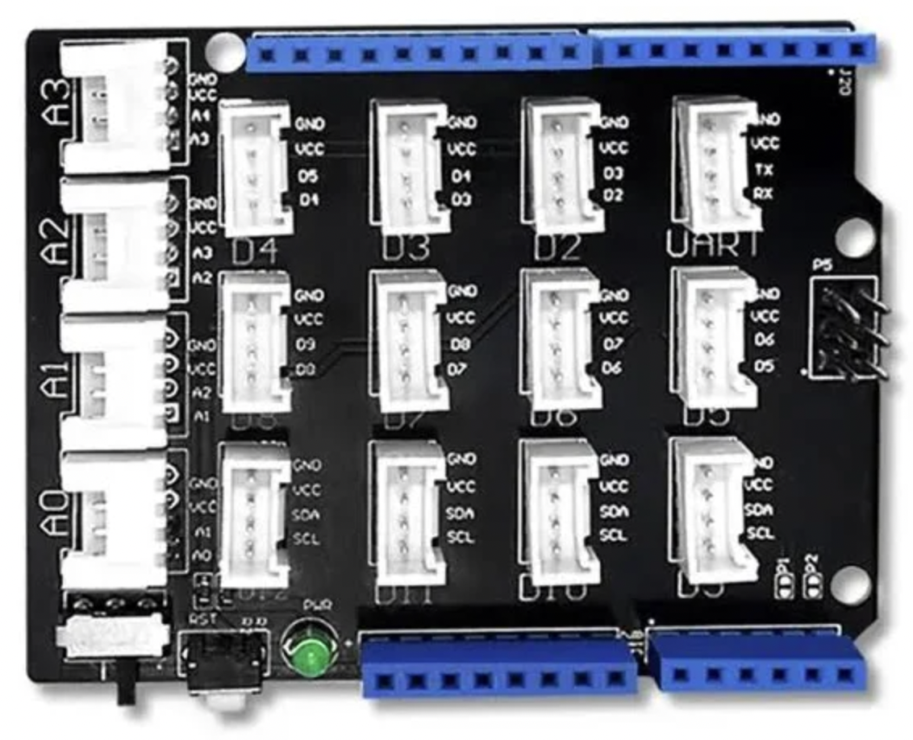
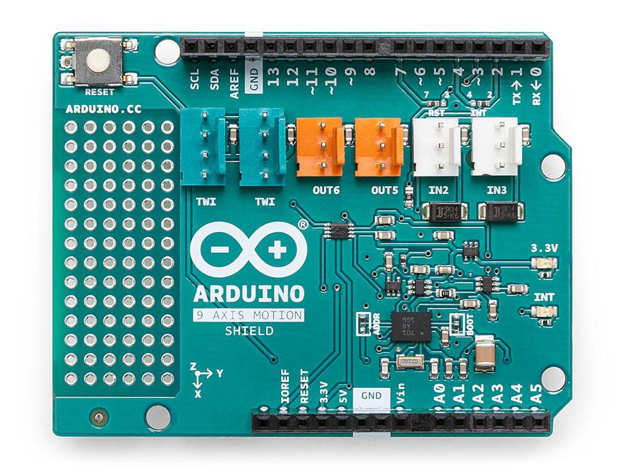
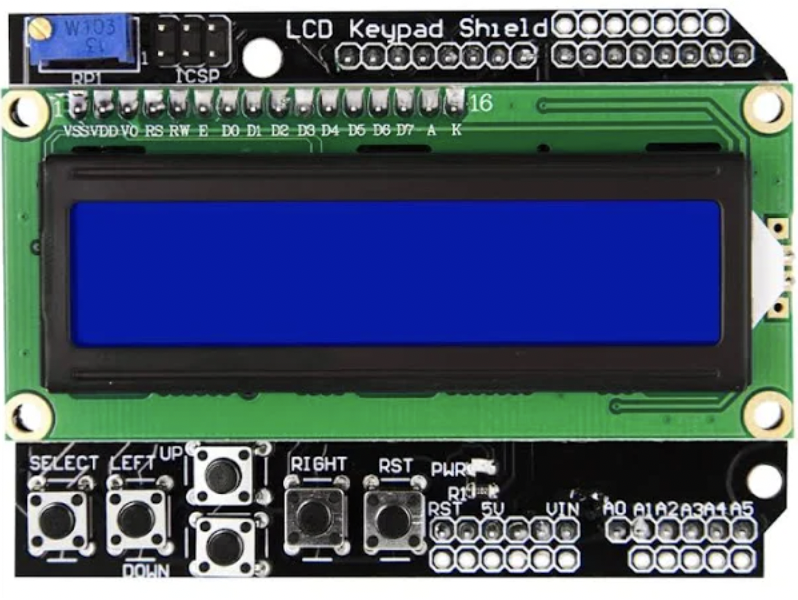
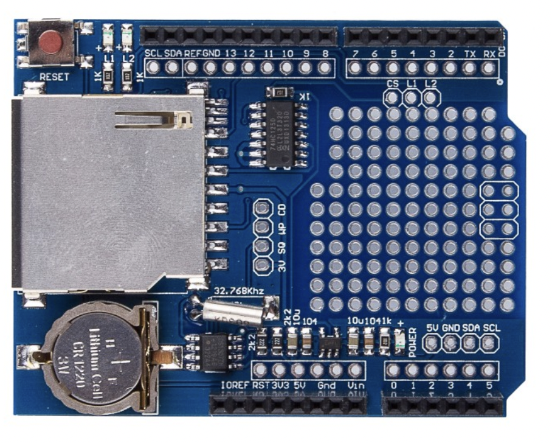

Arduino UNO R4 WiFi
The UNO R4 WiFi keeps the classic UNO form factor and 5 V GPIO while replacing the UNO R3's 8-bit AVR with a 32-bit
Renesas RA4M1, and adds an ESP32-S3 module for Wi-Fi and Bluetooth, a 12 × 8 LED matrix and a Qwiic connector. Juno
compiles for the RA4M1 with its Thumb-2 backend; the ArduinoUno device facade is the entry point for the board's
peripherals. The UNO R4 Minima is not a Juno target.

Core specification
| Characteristic | UNO R4 WiFi |
|---|---|
| Main microcontroller | Renesas R7FA4M1AB3CFM (RA4M1) |
| CPU architecture | 32-bit Arm Cortex-M4 with floating-point unit |
| CPU clock | 48 MHz |
| Program flash | 256 kB |
| SRAM | 32 kB |
| Logic and operating voltage | 5 V |
| Digital I/O | 14 pins, D0-D13 (6 with PWM) |
| Analog inputs | 6 pins, A0-A5, up to 14-bit resolution |
| USB connector | USB-C (native USB) |
| Built-in LED | D13 |
| Wireless coprocessor | ESP32-S3-MINI-1-N8 (Wi-Fi and Bluetooth) |
| Onboard LED matrix | 12 columns by 8 rows |
| Qwiic connector | Yes, 3.3 V I2C |
| Arduino CLI FQBN | arduino:renesas_uno:unor4wifi |
| Juno board id | arduino-uno-r4-wifi |
What Juno supports
| Feature | Status | Notes | Example |
|---|---|---|---|
Gpio, DigitalOutput, analogRead, analogWrite |
✓ | Resolve D0–D13 and A0–A5 through ArduinoUno.getGpio(); mode values are supplied by the same board context. |
Blink |
Delay, Clock, Serial |
✓ | Serial over the native USB port. |
|
Double-precision java.lang.Math |
✓ | MathFunctionsDoublePrecision |
|
Threads, synchronized, locks, StructuredTaskScope, ScopedValue |
✓ | VirtualThreads, StructuredConcurrency |
|
BigInteger, BigDecimal, MathContext |
✓ | ||
UUID.randomUUID() |
✓ | The RA4M1's Secure Crypto Engine true-random-number generator. | |
@Watchdog |
✓ | The RA4M1 hardware watchdog. | |
| Onboard LED matrix | ✓ | 12 × 8 through LedMatrix and LedCanvas. |
LedMatrixScrollingText |
| USB HID mouse | ✓ | ArduinoUno.getMouse() through the Arduino Mouse library. |
RatonLoco |
Servo |
✓ | Through the Arduino Servo library. |
ServoSweep |
| Wi-Fi station and access point | ✓ | Through the ESP32-S3 and WiFiS3. |
|
HttpClient (HTTP and HTTPS) |
✓ | SingleHttpsGet |
|
HttpServer |
✓ | HttpServerBacklight |
|
Smtp, Pop3Client |
✓ | Implicit TLS and STARTTLS (STARTTLS needs the ESP_SSLClient library). |
EmailClient |
| Bluetooth LE (LEGO Powered Up) | ✓ | Through ArduinoBLE; see LEGO. |
|
SdCard |
✓ | On a shield's microSD slot; see Shields. | SdFileOperations |
Features
These need only the UNO R4 WiFi and its USB-C cable.
Blink the built-in LED
DigitalOutput led = DigitalOutput.of(ArduinoUno.getGpio().getBuiltinLed());
while (true) {
led.high();
Delay.millis(500);
led.low();
Delay.millis(500);
}
Blink is the complete program; it builds for any board, so pass
-Djuno.board=arduino-uno-r4-wifi.
Scroll text on the LED matrix
The matrix is 12 columns by 8 rows. LedCanvas draws into a frame and show sends it to the matrix:
LedMatrix matrix = ArduinoUno.getLedMatrix();
matrix.begin();
boolean[][] frame = new boolean[LedCanvas.HEIGHT][LedCanvas.MAX_WIDTH];
for (int offset = 12; offset >= -60; offset--) {
LedCanvas.clear(frame);
LedCanvas.drawText(frame, "Hello, Juno", offset, 0);
LedCanvas.show(frame);
Delay.millis(80);
}
drawText takes a compile-time string literal. LedMatrixScrollingText scrolls a longer
message forever.
USB HID mouse
ArduinoUno.getMouse() makes the board a USB mouse for the computer it is plugged into. Call begin() once, then
move(x, y) moves the pointer by that many pixels:
Mouse mouse = ArduinoUno.getMouse();
mouse.begin();
while (true) {
mouse.move(50, 0); // right
Delay.millis(1000);
mouse.move(0, 50); // down
Delay.millis(1000);
mouse.move(-50, 0); // left
Delay.millis(1000);
mouse.move(0, -50); // up
Delay.millis(1000);
}
Once uploaded, the program keeps moving the pointer; disconnect the board or upload another program to stop it.
RatonLoco is the complete program.
Shields
Seat each shield directly on the UNO R4 WiFi. Check which pins a shield uses before stacking two: the LCD Keypad Shield's backlight and the Data Logger Shield's SD chip select are both D10.
TFT Touch Shield

The ELEGOO 2.8" TFT touch shield is a 240 × 320 ILI9341 color display on an 8-bit parallel bus, with a resistive
touch panel and a microSD socket; it needs no extra Arduino library. TftTouchShield draws through ParallelBus, a
compiler intrinsic that writes a whole GPIO port per store through the RA4M1's port set/reset registers. The TFT Touch Shield
API, wiring and touch calibration are on the Arduino Shields page.
TftTouchShield tft = new TftTouchShield();
tft.setRotation(TftTouchShield.LANDSCAPE);
tft.fillScreen(TftTouchShield.BLACK);
tft.setCursor(10, 10);
tft.setTextSize(2);
tft.setTextColor(TftTouchShield.YELLOW, TftTouchShield.BLACK);
tft.print("Hello, Juno");
while (true) {
if (tft.readTouch()) {
tft.fillCircle(tft.touchX(), tft.touchY(), 3, TftTouchShield.WHITE);
}
}
TouchPaintTFT is a finger-paint program, and
WeatherTFT a desk weather station that reads its Wi-Fi credentials from the
shield's microSD card (TftTouchShield.getSdCard() on the shield instance, chip select D10).
Grove Base Shield

The Grove Base Shield is passive: every socket is an ordinary UNO pin, and GroveBaseShield names them so programs
don't hard-code numbers. Plug a Grove module in and pass the socket's getter to its driver; the socket supplies the
module's GND and VCC. A Grove DHT22 temperature and humidity sensor in the D4 socket:
GroveBaseShield shield = new GroveBaseShield(ArduinoUno.getGpio());
GroveDht22 dht = new GroveDht22();
int[] reading = new int[GroveDht22.READING_LENGTH];
int[] frame = new int[GroveDht22.FRAME_LENGTH];
if (dht.read(shield.getD4(), reading, reading.length, frame, frame.length)) {
Serial.print(reading[GroveDht22.TEMPERATURE_TENTHS_CELSIUS]);
Serial.println(" tenths of a degree");
}
SupabaseGroveTemperatures reads three Grove temperature sensors on this shield
once a minute and publishes them to Supabase. See Grove for the sensor drivers.
Arduino 9 Axis Motion Shield

The shield's Bosch BNO055 fuses its accelerometer and gyroscope itself and reports the heading in degrees.
NineAxisMotionShield reads it over I2C as plain Java, with no Arduino library. The heading is relative to the direction
the sensor pointed at construction, which suits measuring how far a vehicle has turned. Construction drives D7, the
sensor's reset line, so don't use D7 for anything else:
NineAxisMotionShield imu = new NineAxisMotionShield();
imu.reset(); // count the turn from here
while (true) {
Serial.println(imu.getAngle()); // heading since the reset, whole degrees, clockwise
Delay.millis(200);
}
NineAxisMotionShieldSerial prints heading, yaw rate and acceleration readings.
LCD Keypad Shield

A 16 × 2 character LCD with five buttons read through one analog pin (A0). LcdKeypadShield needs no extra library:
the LCD uses D4-D9 and its backlight D10.
LcdKeypadShield lcd = new LcdKeypadShield();
lcd.print("Hello, Juno");
while (true) {
if (lcd.readButton() == LcdKeypadShield.SELECT) {
lcd.setCursor(0, 1);
lcd.print("SELECT pressed");
}
Delay.millis(100);
}
LcdKeypadDemo shows each button press, and Pomodoro
is a Pomodoro timer.
AZDelivery Data Logger Shield

A microSD socket on the UNO's SPI pins (chip select D10, MOSI D11, MISO D12, SCK D13), plus a DS1307 real-time clock
that Juno does not drive. Format the card as FAT16 or FAT32. Keep the network's credentials on the card rather than
in the source: put wifi.ssid and wifi.password in application.properties at the card's root, then:
SdCard sd = new DataLoggerShield().getSdCard();
Wifi wifi = ArduinoUno.getWifi();
if (sd.begin()) {
try (InputStream file = sd.open("application.properties")) {
if (file != null) {
Properties properties = new Properties();
properties.load(file);
wifi.begin(properties.getProperty("wifi.ssid"), properties.getProperty("wifi.password"));
}
}
}
WifiStatusSD joins the network this way and prints its status;
SdFileOperations exercises every SdCard file operation.
Build and run
Run juno:install-deps once to install the Renesas UNO core and the optional libraries the examples need (Mouse,
ArduinoBLE, ESP_SSLClient, Servo, SdFat). Then compile and upload an example, for instance the virtual-threads
demo:
./mvnw -f juno-examples/pom.xml juno:install-deps
./mvnw -f juno-examples/pom.xml compile juno:upload \
-Djuno.main=io.github.jabrena.juno.language.VirtualThreads \
-Djuno.board=arduino-uno-r4-wifi
Open the serial monitor in another terminal:
./mvnw -f juno-examples/pom.xml juno:monitor \
-Djuno.board=arduino-uno-r4-wifi
The monitor uses 115200 baud by default, matching Serial.begin(BaudRate.BAUD_115200).